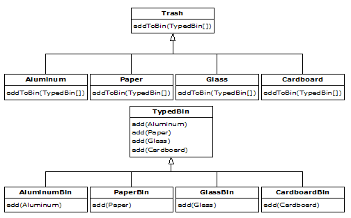
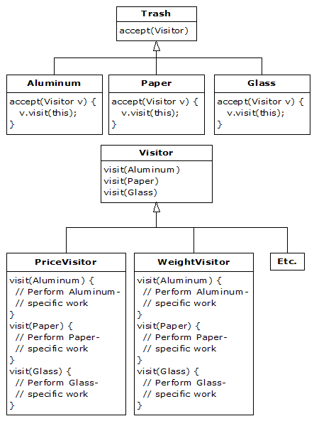

Pattern Refactoring¶
Note
This chapter has not had any significant translation yet.
This chapter will look at the process of solving a problem by applying design patterns in an evolutionary fashion. That is, a first cut design will be used for the initial solution, and then this solution will be examined and various design patterns will be applied to the problem (some of which will work, and some of which won’t). The key question that will always be asked in seeking improved solutions is “what will change?”
This process is similar to what Martin Fowler talks about in his book Refactoring: Improving the Design of Existing Code [#]_ (although he tends to talk about pieces of code more than pattern-level designs). You start with a solution, and then when you discover that it doesn’t continue to meet your needs, you fix it. Of course, this is a natural tendency but in computer programming it’s been extremely difficult to accomplish with procedural programs, and the acceptance of the idea that we can refactor code and designs adds to the body of proof that object-oriented programming is “a good thing.”
Simulating the Trash Recycler¶
The nature of this problem is that the trash is thrown unclassified into a single bin, so the specific type information is lost. But later, the specific type information must be recovered to properly sort the trash. In the initial solution, RTTI (described in Thinking in Java) is used.
This is not a trivial design because it has an added constraint. That’s what makes it interesting-it’s more like the messy problems you’re likely to encounter in your work. The extra constraint is that the trash arrives at the trash recycling plant all mixed together. The program must model the sorting of that trash. This is where RTTI comes in: you have a bunch of anonymous pieces of trash, and the program figures out exactly what type they are:
# PatternRefactoring/recyclea/RecycleA.py
# Recycling with RTTI.
class Trash:
def __init__(self, wt):
self.weight = wt
abstract def getValue()
def getWeight(): return weight
# Sums the value of Trash in a bin:
def sumValue(Iterator it):
val = 0.0f
while(it.hasNext()):
# One kind of RTTI:
# A dynamically-checked cast
Trash t = (Trash)it.next()
# Polymorphism in action:
val += t.getWeight() * t.getValue()
print (
"weight of " +
# Using RTTI to get type
# information about the class:
t.getClass().getName() +
" = " + t.getWeight())
print("Total value = " + val)
class Aluminum(Trash):
val = 1.67f
def __init__(self, wt):
Trash.__init__(wt)
def getValue(): return self.val
setValue(newval):
val = newval
class Paper(Trash):
val = 0.10f
def __init__(self, wt):
Trash.__init__(wt)
def getValue(): return self.val
def setValue(self, newval):
val = newval
class Glass(Trash):
val = 0.23f
def __init__(self, wt):
Trash.__init__(wt)
def getValue(self):
return self.val
def setValue(self, newval):
val = newval
class RecycleA(UnitTest):
bin = ArrayList()
glassBin = ArrayList()
paperBin = ArrayList()
alBin = ArrayList()
def __init__(self):
# Fill up the Trash bin:
for(int i = 0 i < 30 i++)
switch((int)(Math.random() * 3)):
case 0:
bin.add(new
Aluminum(Math.random() * 100))
break
case 1:
bin.add(new
Paper(Math.random() * 100))
break
case 2:
bin.add(new
Glass(Math.random() * 100))
def test(self):
Iterator sorter = bin.iterator()
# Sort the Trash:
while(sorter.hasNext()):
Object t = sorter.next()
# RTTI to show class membership:
if(t instanceof Aluminum)
alBin.add(t)
if(t instanceof Paper)
paperBin.add(t)
if(t instanceof Glass)
glassBin.add(t)
Trash.sumValue(alBin.iterator())
Trash.sumValue(paperBin.iterator())
Trash.sumValue(glassBin.iterator())
Trash.sumValue(bin.iterator())
def main(self, String args[]):
RecycleA().test()
In the source code listings available for this book, this file will be placed in the subdirectory recyclea that branches off from the subdirectory patternRefactoring. The unpacking tool takes care of placing it into the correct subdirectory. The reason for doing this is that this chapter rewrites this particular example a number of times and by putting each version in its own directory (using the default package in each directory so that invoking the program is easy), the class names will not clash.
Several ArrayList objects are created to hold Trash references. Of course, ArrayLists actually hold Objects so they’ll hold anything at all. The reason they hold Trash (or something derived from Trash) is only because you’ve been careful to not put in anything except Trash. If you do put something “wrong” into the ArrayList, you won’t get any compile-time warnings or errors-you’ll find out only via an exception at run time.
When the Trash references are added, they lose their specific identities and become simply Object references (they are upcast). However, because of polymorphism the proper behavior still occurs when the dynamically-bound methods are called through the Iterator sorter, once the resulting Object has been cast back to Trash. sumValue( ) also takes an Iterator to perform operations on every object in the ArrayList.
It looks silly to upcast the types of Trash into a container holding base type references, and then turn around and downcast. Why not just put the trash into the appropriate receptacle in the first place? (Indeed, this is the whole enigma of recycling). In this program it would be easy to repair, but sometimes a system’s structure and flexibility can benefit greatly from downcasting.
The program satisfies the design requirements: it works. This might be fine as long as it’s a one-shot solution. However, a useful program tends to evolve over time, so you must ask, “What if the situation changes?” For example, cardboard is now a valuable recyclable commodity, so how will that be integrated into the system (especially if the program is large and complicated). Since the above type-check coding in the switch statement could be scattered throughout the program, you must go find all that code every time a new type is added, and if you miss one the compiler won’t give you any help by pointing out an error.
The key to the misuse of RTTI here is that every type is tested. If you’re looking for only a subset of types because that subset needs special treatment, that’s probably fine. But if you’re hunting for every type inside a switch statement, then you’re probably missing an important point, and definitely making your code less maintainable. In the next section we’ll look at how this program evolved over several stages to become much more flexible. This should prove a valuable example in program design.
Improving the Design¶
The solutions in Design Patterns are organized around the question “What will change as this program evolves?” This is usually the most important question that you can ask about any design. If you can build your system around the answer, the results will be two-pronged: not only will your system allow easy (and inexpensive) maintenance, but you might also produce components that are reusable, so that other systems can be built more cheaply. This is the promise of object-oriented programming, but it doesn’t happen automatically; it requires thought and insight on your part. In this section we’ll see how this process can happen during the refinement of a system.
The answer to the question “What will change?” for the recycling system is a common one: more types will be added to the system. The goal of the design, then, is to make this addition of types as painless as possible. In the recycling program, we’d like to encapsulate all places where specific type information is mentioned, so (if for no other reason) any changes can be localized to those encapsulations. It turns out that this process also cleans up the rest of the code considerably.
“Make More Objects”¶
This brings up a general object-oriented design principle that I first heard spoken by Grady Booch: “If the design is too complicated, make more objects.” This is simultaneously counterintuitive and ludicrously simple, and yet it’s the most useful guideline I’ve found. (You might observe that “making more objects” is often equivalent to “add another level of indirection.”) In general, if you find a place with messy code, consider what sort of class would clean that up. Often the side effect of cleaning up the code will be a system that has better structure and is more flexible.
Consider first the place where Trash objects are created, which is a switch statement inside main( ):
# PatternRefactoring/clip1.py
for(int i = 0 i < 30 i++)
switch((int)(Math.random() * 3)):
case 0 :
bin.add(new
Aluminum(Math.random() * 100))
break
case 1 :
bin.add(new
Paper(Math.random() * 100))
break
case 2 :
bin.add(new
Glass(Math.random() * 100))
This is definitely messy, and also a place where you must change code whenever a new type is added. If new types are commonly added, a better solution is a single method that takes all of the necessary information and produces a reference to an object of the correct type, already upcast to a trash object. In Design Patterns this is broadly referred to as a creational pattern (of which there are several). The specific pattern that will be applied here is a variant of the Factory Method. Here, the factory method is a static member of Trash, but more commonly it is a method that is overridden in the derived class.
The idea of the factory method is that you pass it the essential information it needs to know to create your object, then stand back and wait for the reference (already upcast to the base type) to pop out as the return value. From then on, you treat the object polymorphically. Thus, you never even need to know the exact type of object that’s created. In fact, the factory method hides it from you to prevent accidental misuse. If you want to use the object without polymorphism, you must explicitly use RTTI and casting.
But there’s a little problem, especially when you use the more complicated approach (not shown here) of making the factory method in the base class and overriding it in the derived classes. What if the information required in the derived class requires more or different arguments? “Creating more objects” solves this problem. To implement the factory method, the Trash class gets a new method called factory. To hide the creational data, there’s a new class called Messenger that carries all of the necessary information for the factory method to create the appropriate Trash object (we’ve started referring to Messenger as a design pattern, but it’s simple enough that you may not choose to elevate it to that status). Here’s a simple implementation of Messenger:
# PatternRefactoring/clip2.py
class Messenger:
# Must change this to add another type:
MAX_NUM = 4
def __init__(self, typeNum, val):
self.type = typeNum % MAX_NUM
self.data = val
A Messenger object’s only job is to hold information for the factory( ) method. Now, if there’s a situation in which factory( ) needs more or different information to create a new type of Trash object, the factory( ) interface doesn’t need to be changed. The Messenger class can be changed by adding new data and new constructors, or in the more typical object-oriented fashion of subclassing.
The factory( ) method for this simple example looks like this:
# PatternRefactoring/clip3.py
def factory(messenger):
switch(messenger.type):
default: # To quiet the compiler
case 0:
return Aluminum(messenger.data)
case 1:
return Paper(messenger.data)
case 2:
return Glass(messenger.data)
# Two lines here:
case 3:
return Cardboard(messenger.data)
Here, the determination of the exact type of object is simple, but you can imagine a more complicated system in which factory( ) uses an elaborate algorithm. The point is that it’s now hidden away in one place, and you know to come to this place when you add new types.
The creation of new objects is now much simpler in main( ):
# PatternRefactoring/clip4.py
for(int i = 0 i < 30 i++)
bin.add(
Trash.factory(
Messenger(
(int)(Math.random() * Messenger.MAX_NUM),
Math.random() * 100)))
A Messenger object is created to pass the data into factory( ), which in turn produces some kind of Trash object on the heap and returns the reference that’s added to the ArrayList bin. Of course, if you change the quantity and type of argument, this statement will still need to be modified, but that can be eliminated if the creation of the Messenger object is automated. For example, an ArrayList of arguments can be passed into the constructor of a Messenger object (or directly into a factory( ) call, for that matter). This requires that the arguments be parsed and checked at run time, but it does provide the greatest flexibility.
You can see from this code what “vector of change” problem the factory is responsible for solving: if you add new types to the system (the change), the only code that must be modified is within the factory, so the factory isolates the effect of that change.
A Pattern for Prototyping Creation¶
A problem with the design above is that it still requires a central location where all the types of the objects must be known: inside the factory( ) method. If new types are regularly being added to the system, the factory( ) method must be changed for each new type. When you discover something like this, it is useful to try to go one step further and move all of the information about the type-including its creation-into the class representing that type. This way, the only thing you need to do to add a new type to the system is to inherit a single class.
To move the information concerning type creation into each specific type of Trash, the “prototype” pattern (from the Design Patterns book) will be used. The general idea is that you have a master sequence of objects, one of each type you’re interested in making. The objects in this sequence are used only for making new objects, using an operation that’s not unlike the clone( ) scheme built into Java’s root class Object. In this case, we’ll name the cloning method tClone( ). When you’re ready to make a new object, presumably you have some sort of information that establishes the type of object you want to create, then you move through the master sequence comparing your information with whatever appropriate information is in the prototype objects in the master sequence. When you find one that matches your needs, you clone it.
In this scheme there is no hard-coded information for creation. Each object knows how to expose appropriate information and how to clone itself. Thus, the factory( ) method doesn’t need to be changed when a new type is added to the system.
One approach to the problem of prototyping is to add a number of methods to support the creation of new objects. However, in Java 1.1 there’s already support for creating new objects if you have a reference to the Class object. With Java 1.1 reflection (introduced in Thinking in Java) you can call a constructor even if you have only a reference to the Class object. This is the perfect solution for the prototyping problem.
The list of prototypes will be represented indirectly by a list of references to all the Class objects you want to create. In addition, if the prototyping fails, the factory( ) method will assume that it’s because a particular Class object wasn’t in the list, and it will attempt to load it. By loading the prototypes dynamically like this, the Trash class doesn’t need to know what types it is working with, so it doesn’t need any modifications when you add new types. This allows it to be easily reused throughout the rest of the chapter:
# PatternRefactoring/trash/Trash.py
# Base class for Trash recycling examples.
class Trash:
def __init__(self, wt): self.weight = wt
def getValue(self): pass
def getWeight(self): return weight
# Sums the value of Trash given an
# Iterator to any container of Trash:
def sumValue(self, it):
val = 0.0f
while(it.hasNext()):
# One kind of RTTI:
# A dynamically-checked cast
Trash t = (Trash)it.next()
val += t.getWeight() * t.getValue()
print (
"weight of " +
# Using RTTI to get type
# information about the class:
t.getClass().getName() +
" = " + t.getWeight())
print("Total value = " + val)
# Remainder of class provides
# support for prototyping:
trashTypes = ArrayList()
def factory(self, info):
for i in trashTypes:
# Somehow determine the type
# to create, and create one:
tc = trashTypes.get(i)
if (tc.getName().index(info.id) != -1):
try:
# Get the dynamic constructor method
# that takes a double argument:
ctor = tc.getConstructor(type(double))
# Call the constructor
# to create a object:
return (Trash)ctor.newInstance()
except ex:
ex.printStackTrace(System.err)
raise "Cannot Create Trash"
# Class was not in the list. Try to load it,
# but it must be in your class path!
try:
print("Loading " + info.id)
trashTypes.add(Class.forName(info.id))
except e:
e.printStackTrace(System.err)
raise "Prototype not found"
# Loaded successfully.
# Recursive call should work:
return factory(info)
class Messenger:
def __init__(self, name, val):
self.id = name
self.data = val
The basic **Trash** class and **sumValue( )** remain as before. The rest of the
class supports the prototyping pattern. You first see two inner classes (which
are made **static**, so they are inner classes only for code organization
purposes) describing exceptions that can occur. This is followed by an
**ArrayList** called **trashTypes**, which is used to hold the **Class**
references.
In Trash.factory( ), the String inside the Messenger object id (a different version of the Messenger class than that of the prior discussion) contains the type name of the Trash to be created; this String is compared to the Class names in the list. If there’s a match, then that’s the object to create. Of course, there are many ways to determine what object you want to make. This one is used so that information read in from a file can be turned into objects.
Once you’ve discovered which kind of Trash to create, then the reflection methods come into play. The getConstructor( ) method takes an argument that’s an array of Class references. This array represents the arguments, in their proper order, for the constructor that you’re looking for. Here, the array is dynamically created using the Java 1.1 array-creation syntax:
Class[]:double.class
This code assumes that every Trash type has a constructor that takes a double (and notice that double.class is distinct from Double.class). It’s also possible, for a more flexible solution, to call getConstructors( ), which returns an array of the possible constructors.
What comes back from getConstructor( ) is a reference to a Constructor object (part of java.lang.reflect). You call the constructor dynamically with the method newInstance( ), which takes an array of Object containing the actual arguments. This array is again created using the Java 1.1 syntax:
Object[]{Double(Messenger.data)
In this case, however, the double must be placed inside a wrapper class so that it can be part of this array of objects. The process of calling newInstance( ) extracts the double, but you can see it is a bit confusing-an argument might be a double or a Double, but when you make the call you must always pass in a Double. Fortunately, this issue exists only for the primitive types.
Once you understand how to do it, the process of creating a new object given only a Class reference is remarkably simple. Reflection also allows you to call methods in this same dynamic fashion.
Of course, the appropriate Class reference might not be in the trashTypes list. In this case, the return in the inner loop is never executed and you’ll drop out at the end. Here, the program tries to rectify the situation by loading the Class object dynamically and adding it to the trashTypes list. If it still can’t be found something is really wrong, but if the load is successful then the factory method is called recursively to try again.
As you’ll see, the beauty of this design is that this code doesn’t need to be changed, regardless of the different situations it will be used in (assuming that all Trash subclasses contain a constructor that takes a single double argument).
Trash Subclasses¶
To fit into the prototyping scheme, the only thing that’s required of each new subclass of Trash is that it contain a constructor that takes a double argument. Java reflection handles everything else.
Here are the different types of Trash, each in their own file but part of the Trash package (again, to facilitate reuse within the chapter):
# PatternRefactoring/trash/Aluminum.py
# The Aluminum class with prototyping.
class Aluminum(Trash):
val = 1.67f
def __init__(self, wt): Trash.__init__(wt)
def getValue(self): return val
def setValue(self, newVal):
self.val = newVal::
# PatternRefactoring/trash/Paper.py
# The Paper class with prototyping.
class Paper(Trash):
val = 0.10f
def __init__(self, wt): Trash.__init__(wt)
def getValue(self): return self.val
def setValue(self, newVal):
self.val = newVal::
# PatternRefactoring/trash/Glass.py
# The Glass class with prototyping.
class Glass(Trash):
val = 0.23f
def __init__(self, wt): Trash.__init__(wt)
def getValue(self): return self.val
def setValue(self, newVal):
self.val = newVal
And here’s a new type of Trash:
# PatternRefactoring/trash/Cardboard.py
# The Cardboard class with prototyping.
class Cardboard(Trash):
val = 0.23f
def __init__(self, wt): Trash.__init__(wt)
def getValue(self): return self.val
def setValue(self, newVal):
self.val = newVal
You can see that, other than the constructor, there’s nothing special about any of these classes.
Parsing Trash from an External File¶
The information about Trash objects will be read from an outside file. The file has all of the necessary information about each piece of trash on a single line in the form Trash:weight, such as:
# PatternRefactoring/trash/Trash.dat
patternRefactoring.trash.Glass:54
patternRefactoring.trash.Paper:22
patternRefactoring.trash.Paper:11
patternRefactoring.trash.Glass:17
patternRefactoring.trash.Aluminum:89
patternRefactoring.trash.Paper:88
patternRefactoring.trash.Aluminum:76
patternRefactoring.trash.Cardboard:96
patternRefactoring.trash.Aluminum:25
patternRefactoring.trash.Aluminum:34
patternRefactoring.trash.Glass:11
patternRefactoring.trash.Glass:68
patternRefactoring.trash.Glass:43
patternRefactoring.trash.Aluminum:27
patternRefactoring.trash.Cardboard:44
patternRefactoring.trash.Aluminum:18
patternRefactoring.trash.Paper:91
patternRefactoring.trash.Glass:63
patternRefactoring.trash.Glass:50
patternRefactoring.trash.Glass:80
patternRefactoring.trash.Aluminum:81
patternRefactoring.trash.Cardboard:12
patternRefactoring.trash.Glass:12
patternRefactoring.trash.Glass:54
patternRefactoring.trash.Aluminum:36
patternRefactoring.trash.Aluminum:93
patternRefactoring.trash.Glass:93
patternRefactoring.trash.Paper:80
patternRefactoring.trash.Glass:36
patternRefactoring.trash.Glass:12
patternRefactoring.trash.Glass:60
patternRefactoring.trash.Paper:66
patternRefactoring.trash.Aluminum:36
patternRefactoring.trash.Cardboard:22
Note that the class path must be included when giving the class names, otherwise the class will not be found.
This file is read using the previously-defined StringList tool, and each line is picked aparat using the String method indexOf( ) to produce the index of the ‘:‘. This is first used with the String method substring( ) to extract the name of the trash type, and next to get the weight that is turned into a double with the static Double.valueOf( ) method. The trim( ) method removes white space at both ends of a string.
The Trash parser is placed in a separate file since it will be reused throughout this chapter:
# PatternRefactoring/trash/ParseTrash.py
# Parse file contents into Trash objects,
# placing each into a Fillable holder.
class ParseTrash:
def fillBin(String filename, Fillable bin):
for line in open(filename).readlines():
String type = line.substring(0,
line.index(':')).strip()
weight = Double.valueOf(
line.substring(line.index(':') + 1)
.strip()).doubleValue()
bin.addTrash(
Trash.factory(
Trash.Messenger(type, weight)))
# Special case to handle Collection:
def fillBin(String filename, Bin):
fillBin(filename, FillableCollection(bin))
In RecycleA.py, an ArrayList was used to hold the Trash objects. However, other types of containers can be used as well. To allow for this, the first version of fillBin( ) takes a reference to a Fillable, which is simply an interface that supports a method called addTrash( ):
# PatternRefactoring/trash/Fillable.py
# Any object that can be filled with Trash.
class Fillable:
def addTrash(self, Trash t)
Anything that supports this interface can be used with fillBin. Of course, Collection doesn’t implement Fillable, so it won’t work. Since Collection is used in most of the examples, it makes sense to add a second overloaded fillBin( ) method that takes a Collection. Any Collection can then be used as a Fillable object using an adapter class:
# PatternRefactoring/trash/FillableCollection.py
# Adapter that makes a Collection Fillable.
class FillableCollection(Fillable):
def __init__(self, cc):
self.c = cc
def addTrash(self, t):
self.c.add(t)
You can see that the only job of this class is to connect Fillable‘s addTrash( ) method to Collection‘s add( ). With this class in hand, the overloaded fillBin( ) method can be used with a Collection in ParseTrash.py:
def fillBin(filename, bin):
fillBin(filename, FillableCollection(bin))
This approach works for any container class that’s used frequently. Alternatively, the container class can provide its own adapter that implements Fillable. (You’ll see this later, in DynaTrash.py.)
Recycling with Prototyping¶
Now you can see the revised version of RecycleA.py using the prototyping technique:
# PatternRefactoring/recycleap/RecycleAP.py
# Recycling with RTTI and Prototypes.
class RecycleAP(UnitTest):
Collection
bin = ArrayList(),
glassBin = ArrayList(),
paperBin = ArrayList(),
alBin = ArrayList()
def __init__(self):
# Fill up the Trash bin:
ParseTrash.fillBin(
"../trash/Trash.dat", bin)
def test(self):
Iterator sorter = bin.iterator()
# Sort the Trash:
while(sorter.hasNext()):
Object t = sorter.next()
# RTTI to show class membership:
if(t instanceof Aluminum)
alBin.add(t)
if(t instanceof Paper)
paperBin.add(t)
if(t instanceof Glass)
glassBin.add(t)
Trash.sumValue(alBin.iterator())
Trash.sumValue(paperBin.iterator())
Trash.sumValue(glassBin.iterator())
Trash.sumValue(bin.iterator())
def main(self, String args[]):
RecycleAP().test()
All of the Trash objects, as well as the ParseTrash and support classes, are now part of the package patternRefactoring.trash, so they are simply imported.
The process of opening the data file containing Trash descriptions and the parsing of that file have been wrapped into the static method ParseTrash.fillBin( ), so now it’s no longer a part of our design focus. You will see that throughout the rest of the chapter, no matter what new classes are added, ParseTrash.fillBin( ) will continue to work without change, which indicates a good design.
In terms of object creation, this design does indeed severely localize the changes you need to make to add a new type to the system. However, there’s a significant problem in the use of RTTI that shows up clearly here. The program seems to run fine, and yet it never detects any cardboard, even though there is cardboard in the list! This happens because of the use of RTTI, which looks for only the types that you tell it to look for. The clue that RTTI is being misused is that every type in the system is being tested, rather than a single type or subset of types. As you will see later, there are ways to use polymorphism instead when you’re testing for every type. But if you use RTTI a lot in this fashion, and you add a new type to your system, you can easily forget to make the necessary changes in your program and produce a difficult-to- find bug. So it’s worth trying to eliminate RTTI in this case, not just for aesthetic reasons-it produces more maintainable code.
Abstracting Usage¶
With creation out of the way, it’s time to tackle the remainder of the design: where the classes are used. Since it’s the act of sorting into bins that’s particularly ugly and exposed, why not take that process and hide it inside a class? This is the principle of “If you must do something ugly, at least localize the ugliness inside a class.” It looks like this:

The TrashSorter object initialization must now be changed whenever a new type of Trash is added to the model. You could imagine that the TrashSorter class might look something like this:
class TrashSorter(ArrayList):
def sort(self, Trash t): /* ... */
That is, TrashSorter is an ArrayList of references to ArrayLists of Trash references, and with add( ) you can install another one, like so:
TrashSorter ts = TrashSorter()
ts.add(ArrayList())
Now, however, sort( ) becomes a problem. How does the statically-coded method deal with the fact that a new type has been added? To solve this, the type information must be removed from sort( ) so that all it needs to do is call a generic method that takes care of the details of type. This, of course, is another way to describe a dynamically-bound method. So sort( ) will simply move through the sequence and call a dynamically-bound method for each ArrayList. Since the job of this method is to grab the pieces of trash it is interested in, it’s called grab(Trash). The structure now looks like:

TrashSorter needs to call each grab( ) method and get a different result depending on what type of Trash the current ArrayList is holding. That is, each ArrayList must be aware of the type it holds. The classic approach to this problem is to create a base Trash bin class and inherit a new derived class for each different type you want to hold. If Java had a parameterized type mechanism that would probably be the most straightforward approach. But rather than hand-coding all the classes that such a mechanism should be building for us, further observation can produce a better approach.
A basic OOP design principle is “Use data members for variation in state, use polymorphism for variation in behavior.” Your first thought might be that the grab( ) method certainly behaves differently for an ArrayList that holds Paper than for one that holds Glass. But what it does is strictly dependent on the type, and nothing else. This could be interpreted as a different state, and since Java has a class to represent type (Class) this can be used to determine the type of Trash a particular Tbin will hold.
The constructor for this Tbin requires that you hand it the Class of your choice. This tells the ArrayList what type it is supposed to hold. Then the grab( ) method uses Class BinType and RTTI to see if the Trash object you’ve handed it matches the type it’s supposed to grab.
Here is the new version of the program:
# PatternRefactoring/recycleb/RecycleB.py
# Containers that grab objects of interest.
# A container that admits only the right type
# of Trash (established in the constructor):
class Tbin:
def __init__(self, binType):
self.list = ArrayList()
self.type = binType
def grab(self, t):
# Comparing class types:
if(t.getClass().equals(self.type)):
self.list.add(t)
return True # Object grabbed
return False # Object not grabbed
def iterator(self):
return self.list.iterator()
class TbinList(ArrayList):
def sort(self, Trash t):
Iterator e = iterator() # Iterate over self
while(e.hasNext())
if(((Tbin)e.next()).grab(t)) return
# Need a Tbin for this type:
add(Tbin(t.getClass()))
sort(t) # Recursive call
class RecycleB(UnitTest):
Bin = ArrayList()
TbinList trashBins = TbinList()
def __init__(self):
ParseTrash.fillBin("../trash/Trash.dat",bin)
def test(self):
Iterator it = bin.iterator()
while(it.hasNext())
trashBins.sort((Trash)it.next())
Iterator e = trashBins.iterator()
while(e.hasNext()):
Tbin b = (Tbin)e.next()
Trash.sumValue(b.iterator())
Trash.sumValue(bin.iterator())
def main(self, String args[]):
RecycleB().test()
Tbin contains a Class reference type which establishes in the constructor what what type it should grab. The grab() method checks this type against the object you pass it. Note that in this design, grab() only accepts Trash objects so you get compile-time type checking on the base type, but you could also just accept Object and it would still work.
TTbinList holds a set of Tbin references, so that sort( ) can iterate through the Tbins when it’s looking for a match for the Trash object you’ve handed it. If it doesn’t find a match, it creates a new Tbin for the type that hasn’t been found, and makes a recursive call to itself - the next time around, the new bin will be found.
Notice the genericity of this code: it doesn’t change at all if new types are added. If the bulk of your code doesn’t need changing when a new type is added (or some other change occurs) then you have an easily extensible system.
Multiple Dispatching¶
The above design is certainly satisfactory. Adding new types to the system consists of adding or modifying distinct classes without causing code changes to be propagated throughout the system. In addition, RTTI is not “misused” as it was in RecycleA.py. However, it’s possible to go one step further and take a purist viewpoint about RTTI and say that it should be eliminated altogether from the operation of sorting the trash into bins.
To accomplish this, you must first take the perspective that all type-dependent activities-such as detecting the type of a piece of trash and putting it into the appropriate bin-should be controlled through polymorphism and dynamic binding.
The previous examples first sorted by type, then acted on sequences of elements that were all of a particular type. But whenever you find yourself picking out particular types, stop and think. The whole idea of polymorphism (dynamically- bound method calls) is to handle type-specific information for you. So why are you hunting for types?
The answer is something you probably don’t think about: Python performs only single dispatching. That is, if you are performing an operation on more than one object whose type is unknown, Python will invoke the dynamic binding mechanism on only one of those types. This doesn’t solve the problem, so you end up detecting some types manually and effectively producing your own dynamic binding behavior.
The solution is called multiple dispatching, which means setting up a configuration such that a single method call produces more than one dynamic method call and thus determines more than one type in the process. To get this effect, you need to work with more than one type hierarchy: you’ll need a type hierarchy for each dispatch. The following example works with two hierarchies: the existing Trash family and a hierarchy of the types of trash bins that the trash will be placed into. This second hierarchy isn’t always obvious and in this case it needed to be created in order to produce multiple dispatching (in this case there will be only two dispatches, which is referred to as double dispatching).
Implementing the Double Dispatch¶
Remember that polymorphism can occur only via method calls, so if you want double dispatching to occur, there must be two method calls: one used to determine the type within each hierarchy. In the Trash hierarchy there will be a new method called addToBin( ), which takes an argument of an array of TypedBin. It uses this array to step through and try to add itself to the appropriate bin, and this is where you’ll see the double dispatch.
The new hierarchy is TypedBin, and it contains its own method called add( ) that is also used polymorphically. But here’s an additional twist: add( ) is overloaded to take arguments of the different types of trash. So an essential part of the double dispatching scheme also involves overloading.
Redesigning the program produces a dilemma: it’s now necessary for the base class Trash to contain an addToBin( ) method. One approach is to copy all of the code and change the base class. Another approach, which you can take when you don’t have control of the source code, is to put the addToBin( ) method into an interface, leave Trash alone, and inherit new specific types of Aluminum, Paper, Glass, and Cardboard. This is the approach that will be taken here.
Most of the classes in this design must be public, so they are placed in their own files. Here’s the interface:
# PatternRefactoring/doubledispatch/TypedBinMember.py
# An class for adding the double
# dispatching method to the trash hierarchy
# without modifying the original hierarchy.
class TypedBinMember:
# The method:
boolean addToBin(TypedBin[] tb)
In each particular subtype of Aluminum, Paper, Glass, and Cardboard, the addToBin( ) method in the interface TypedBinMember is implemented, but it looks like the code is exactly the same in each case:
# PatternRefactoring/doubledispatch/DDAluminum.py
# Aluminum for double dispatching.
class DDAluminum(Aluminum, TypedBinMember):
def __init__(self, wt): Aluminum.__init__(wt)
def addToBin(self, TypedBin[] tb):
for(int i = 0 i < tb.length i++)
if(tb[i].add(self)):
return True
return False::
# PatternRefactoring/doubledispatch/DDPaper.py
# Paper for double dispatching.
class DDPaper(Paper, TypedBinMember):
def __init__(self, wt): Paper.__init__(wt)
def addToBin(self, TypedBin[] tb):
for(int i = 0 i < tb.length i++)
if(tb[i].add(self))
return True
return False::
# PatternRefactoring/doubledispatch/DDGlass.py
# Glass for double dispatching.
class DDGlass(Glass, TypedBinMember):
def __init__(self, wt): Glass.__init__(wt)
def addToBin(self, TypedBin[] tb):
for(int i = 0 i < tb.length i++)
if(tb[i].add(self))
return True
return False::
# PatternRefactoring/doubledispatch/DDCardboard.py
# Cardboard for double dispatching.
class DDCardboard(Cardboard, TypedBinMember):
def __init__(self, wt):
Cardboard.__init__(wt)
def addToBin(self, TypedBin[] tb):
for(int i = 0 i < tb.length i++)
if(tb[i].add(self))
return True
return False
The code in each addToBin( ) calls add( ) for each TypedBin object in the array. But notice the argument: this. The type of this is different for each subclass of Trash, so the code is different. (Although this code will benefit if a parameterized type mechanism is ever added to Java.) So this is the first part of the double dispatch, because once you’re inside this method you know you’re Aluminum, or Paper, etc. During the call to add( ), this information is passed via the type of this. The compiler resolves the call to the proper overloaded version of add( ). But since tb[i] produces a reference to the base type TypedBin, this call will end up calling a different method depending on the type of TypedBin that’s currently selected. That is the second dispatch.
Here’s the base class for TypedBin:
# PatternRefactoring/doubledispatch/TypedBin.py
# A container for the second dispatch.
class TypedBin:
c = ArrayList()
def addIt(self, Trash t):
c.add(t)
return True
def iterator(self):
return c.iterator()
def add(self, DDAluminum a):
return False
def add(self, DDPaper a):
return False
def add(self, DDGlass a):
return False
def add(self, DDCardboard a):
return False
You can see that the overloaded add( ) methods all return false. If the method is not overloaded in a derived class, it will continue to return false, and the caller (addToBin( ), in this case) will assume that the current Trash object has not been added successfully to a container, and continue searching for the right container.
In each of the subclasses of TypedBin, only one overloaded method is overridden, according to the type of bin that’s being created. For example, CardboardBin overrides add(DDCardboard). The overridden method adds the trash object to its container and returns true, while all the rest of the add( ) methods in CardboardBin continue to return false, since they haven’t been overridden. This is another case in which a parameterized type mechanism in Java would allow automatic generation of code. (With C++ templates, you wouldn’t have to explicitly write the subclasses or place the addToBin( ) method in Trash.)
Since for this example the trash types have been customized and placed in a different directory, you’ll need a different trash data file to make it work. Here’s a possible DDTrash.dat:
# PatternRefactoring/doubledispatch/DDTrash.dat
DDGlass:54
DDPaper:22
DDPaper:11
DDGlass:17
DDAluminum:89
DDPaper:88
DDAluminum:76
DDCardboard:96
DDAluminum:25
DDAluminum:34
DDGlass:11
DDGlass:68
DDGlass:43
DDAluminum:27
DDCardboard:44
DDAluminum:18
DDPaper:91
DDGlass:63
DDGlass:50
DDGlass:80
DDAluminum:81
DDCardboard:12
DDGlass:12
DDGlass:54
DDAluminum:36
DDAluminum:93
DDGlass:93
DDPaper:80
DDGlass:36
DDGlass:12
DDGlass:60
DDPaper:66
DDAluminum:36
DDCardboard:22
Here’s the rest of the program:
# PatternRefactoring/doubledispatch/DoubleDispatch.py
# Using multiple dispatching to handle more
# than one unknown type during a method call.
class AluminumBin(TypedBin):
def add(self, DDAluminum a):
return addIt(a)
class PaperBin(TypedBin):
def add(self, DDPaper a):
return addIt(a)
class GlassBin(TypedBin):
def add(self, DDGlass a):
return addIt(a)
class CardboardBin(TypedBin):
def add(self, DDCardboard a):
return addIt(a)
class TrashBinSet:
binSet = [
AluminumBin(),
PaperBin(),
GlassBin(),
CardboardBin()
]
def sortIntoBins(self, bin):
Iterator e = bin.iterator()
while(e.hasNext()):
TypedBinMember t =
(TypedBinMember)e.next()
if(!t.addToBin(binSet))
System.err.println("Couldn't add " + t)
def binSet(): return binSet
class DoubleDispatch(UnitTest):
Bin = ArrayList()
TrashBinSet bins = TrashBinSet()
def __init__(self):
# ParseTrash still works, without changes:
ParseTrash.fillBin("DDTrash.dat", bin)
def test(self):
# Sort from the master bin into
# the individually-typed bins:
bins.sortIntoBins(bin)
TypedBin[] tb = bins.binSet()
# Perform sumValue for each bin...
for(int i = 0 i < tb.length i++)
Trash.sumValue(tb[i].c.iterator())
# ... and for the master bin
Trash.sumValue(bin.iterator())
def main(self, String args[]):
DoubleDispatch().test()
TrashBinSet encapsulates all of the different types of TypedBins, along with the sortIntoBins( ) method, which is where all the double dispatching takes place. You can see that once the structure is set up, sorting into the various TypedBins is remarkably easy. In addition, the efficiency of two dynamic method calls is probably better than any other way you could sort.
Notice the ease of use of this system in main( ), as well as the complete independence of any specific type information within main( ). All other methods that talk only to the Trash base-class interface will be equally invulnerable to changes in Trash types.
The changes necessary to add a new type are relatively isolated: you modify TypedBin, inherit the new type of Trash with its addToBin( ) method, then inherit a new TypedBin (this is really just a copy and simple edit), and finally add a new type into the aggregate initialization for TrashBinSet.
The Visitor Pattern¶
Now consider applying a design pattern that has an entirely different goal to the trash sorting problem.
For this pattern, we are no longer concerned with optimizing the addition of new types of Trash to the system. Indeed, this pattern makes adding a new type of Trash more complicated. The assumption is that you have a primary class hierarchy that is fixed; perhaps it’s from another vendor and you can’t make changes to that hierarchy. However, you’d like to add new polymorphic methods to that hierarchy, which means that normally you’d have to add something to the base class interface. So the dilemma is that you need to add methods to the base class, but you can’t touch the base class. How do you get around this?
The design pattern that solves this kind of problem is called a “visitor” (the final one in the Design Patterns book), and it builds on the double dispatching scheme shown in the last section.
The visitor pattern allows you to extend the interface of the primary type by creating a separate class hierarchy of type Visitor to virtualize the operations performed upon the primary type. The objects of the primary type simply “accept” the visitor, then call the visitor’s dynamically-bound method. It looks like this:
Now, if v is a Visitable reference to an Aluminum object, the code:
PriceVisitor pv = PriceVisitor()
v.accept(pv)
uses double dispatching to cause two polymorphic method calls: the first one to select Aluminum‘s version of accept( ), and the second one within accept( ) when the specific version of visit( ) is called dynamically using the base-class Visitor reference v.
This configuration means that new functionality can be added to the system in the form of new subclasses of Visitor. The Trash hierarchy doesn’t need to be touched. This is the prime benefit of the visitor pattern: you can add new polymorphic functionality to a class hierarchy without touching that hierarchy (once the accept( ) methods have been installed). Note that the benefit is helpful here but not exactly what we started out to accomplish, so at first blush you might decide that this isn’t the desired solution.
But look at one thing that’s been accomplished: the visitor solution avoids sorting from the master Trash sequence into individual typed sequences. Thus, you can leave everything in the single master sequence and simply pass through that sequence using the appropriate visitor to accomplish the goal. Although this behavior seems to be a side effect of visitor, it does give us what we want (avoiding RTTI).
The double dispatching in the visitor pattern takes care of determining both the type of Trash and the type of Visitor. In the following example, there are two implementations of Visitor: PriceVisitor to both determine and sum the price, and WeightVisitor to keep track of the weights.
You can see all of this implemented in the new, improved version of the recycling program.
As with DoubleDispatch.py, the Trash class is left alone and a new interface is created to add the accept( ) method:
# PatternRefactoring/trashvisitor/Visitable.py
# An class to add visitor functionality
# to the Trash hierarchy without
# modifying the base class.
class Visitable:
# The method:
def accept(self, Visitor v)
Since there’s nothing concrete in the Visitor base class, it can be created as an interface:
# PatternRefactoring/trashvisitor/Visitor.py
# The base class for visitors.
class Visitor:
def visit(self, Aluminum a)
def visit(self, Paper p)
def visit(self, Glass g)
def visit(self, Cardboard c)
A Reflective Decorator¶
At this point, you could follow the same approach that was used for double dispatching and create new subtypes of Aluminum, Paper, Glass, and Cardboard that implement the accept( ) method. For example, the new Visitable Aluminum would look like this:
# PatternRefactoring/trashvisitor/VAluminum.py
# Taking the previous approach of creating a
# specialized Aluminum for the visitor pattern.
class VAluminum(Aluminum, Visitable):
def __init__(self, wt): Aluminum.__init__(wt)
def accept(self, v):
v.visit(self)
However, we seem to be encountering an “explosion of interfaces:” basic Trash, special versions for double dispatching, and now more special versions for visitor. Of course, this “explosion of interfaces” is arbitrary-one could simply put the additional methods in the Trash class. If we ignore that we can instead see an opportunity to use the Decorator pattern: it seems like it should be possible to create a Decorator that can be wrapped around an ordinary Trash object and will produce the same interface as Trash and add the extra accept( ) method. In fact, it’s a perfect example of the value of Decorator.
The double dispatch creates a problem, however. Since it relies on overloading of both accept( ) and visit( ), it would seem to require specialized code for each different version of the accept( ) method. With C++ templates, this would be fairly easy to accomplish (since templates automatically generate type-specialized code) but Python has no such mechanism-at least it does not appear to. However, reflection allows you to determine type information at run time, and it turns out to solve many problems that would seem to require templates (albeit not as simply). Here’s the decorator that does the trick [1]:
# PatternRefactoring/trashvisitor/VisitableDecorator.py
# A decorator that adapts the generic Trash
# classes to the visitor pattern.
class VisitableDecorator(Trash, Visitable):
def __init__(self, t):
self.delegate = t
try:
self.dispatch = Visitor.class.getMethod (
"visit", Class[]: t.getClass()
)
except ex:
ex.printStackTrace()
def getValue(self):
return delegate.getValue()
def getWeight(self):
return delegate.getWeight()
def accept(self, Visitor v):
self.dispatch.invoke(v, delegate)
[[ Description of Reflection use ]]
The only other tool we need is a new type of Fillable adapter that automatically decorates the objects as they are being created from the original Trash.dat file. But this might as well be a decorator itself, decorating any kind of Fillable:
# PatternRefactoring/trashvisitor/FillableVisitor.py
# Adapter Decorator that adds the visitable
# decorator as the Trash objects are
# being created.
class FillableVisitor(Fillable):
def __init__(self, ff): self.f = ff
def addTrash(self, t):
self.f.addTrash(VisitableDecorator(t))
Now you can wrap it around any kind of existing Fillable, or any new ones that haven’t yet been created.
The rest of the program creates specific Visitor types and sends them through a single list of Trash objects:
# PatternRefactoring/trashvisitor/TrashVisitor.py
# The "visitor" pattern with VisitableDecorators.
# Specific group of algorithms packaged
# in each implementation of Visitor:
class PriceVisitor(Visitor):
alSum = 0.0 # Aluminum
pSum = 0.0 # Paper
gSum = 0.0 # Glass
cSum = 0.0 # Cardboard
def visit(self, al):
v = al.getWeight() * al.getValue()
print("value of Aluminum= " + v)
alSum += v
def visit(self, p):
v = p.getWeight() * p.getValue()
print("value of Paper= " + v)
pSum += v
def visit(self, g):
v = g.getWeight() * g.getValue()
print("value of Glass= " + v)
gSum += v
def visit(self, c):
v = c.getWeight() * c.getValue()
print("value of Cardboard = " + v)
cSum += v
def total(self):
print (
"Total Aluminum: $" + alSum +
"\n Total Paper: $" + pSum +
"\nTotal Glass: $" + gSum +
"\nTotal Cardboard: $" + cSum +
"\nTotal: $" +
(alSum + pSum + gSum + cSum))
class WeightVisitor(Visitor):
alSum = 0.0 # Aluminum
pSum = 0.0 # Paper
gSum = 0.0 # Glass
cSum = 0.0 # Cardboard
def visit(self, Aluminum al):
alSum += al.getWeight()
print ("weight of Aluminum = "
+ al.getWeight())
def visit(self, Paper p):
pSum += p.getWeight()
print ("weight of Paper = "
+ p.getWeight())
def visit(self, Glass g):
gSum += g.getWeight()
print ("weight of Glass = "
+ g.getWeight())
def visit(self, Cardboard c):
cSum += c.getWeight()
print ("weight of Cardboard = "
+ c.getWeight())
def total(self):
print (
"Total weight Aluminum: " + alSum +
"\nTotal weight Paper: " + pSum +
"\nTotal weight Glass: " + gSum +
"\nTotal weight Cardboard: " + cSum +
"\nTotal weight: " +
(alSum + pSum + gSum + cSum))
class TrashVisitor(UnitTest):
Bin = ArrayList()
PriceVisitor pv = PriceVisitor()
WeightVisitor wv = WeightVisitor()
def __init__(self):
ParseTrash.fillBin("../trash/Trash.dat",
FillableVisitor(
FillableCollection(bin)))
def test(self):
Iterator it = bin.iterator()
while(it.hasNext()):
Visitable v = (Visitable)it.next()
v.accept(pv)
v.accept(wv)
pv.total()
wv.total()
def main(self, String args[]):
TrashVisitor().test()
In **Test( )**, note how visitability is added by simply creating a different
kind of bin using the decorator. Also notice that the **FillableCollection**
adapter has the appearance of being used as a decorator (for **ArrayList**) in
this situation. However, it completely changes the interface of the
**ArrayList**, whereas the definition of *Decorator* is that the interface of
the decorated class must still be there after decoration.
Note that the shape of the client code (shown in the Test class) has changed again, from the original approaches to the problem. Now there’s only a single Trash bin. The two Visitor objects are accepted into every element in the sequence, and they perform their operations. The visitors keep their own internal data to tally the total weights and prices.
Finally, there’s no run time type identification other than the inevitable cast to Trash when pulling things out of the sequence. This, too, could be eliminated with the implementation of parameterized types in Java.
One way you can distinguish this solution from the double dispatching solution described previously is to note that, in the double dispatching solution, only one of the overloaded methods, add( ), was overridden when each subclass was created, while here each one of the overloaded visit( ) methods is overridden in every subclass of Visitor.
More Coupling?¶
There’s a lot more code here, and there’s definite coupling between the Trash hierarchy and the Visitor hierarchy. However, there’s also high cohesion within the respective sets of classes: they each do only one thing (Trash describes Trash, while Visitor describes actions performed on Trash), which is an indicator of a good design. Of course, in this case it works well only if you’re adding new Visitors, but it gets in the way when you add new types of Trash.
Low coupling between classes and high cohesion within a class is definitely an important design goal. Applied mindlessly, though, it can prevent you from achieving a more elegant design. It seems that some classes inevitably have a certain intimacy with each other. These often occur in pairs that could perhaps be called couplets; for example, containers and iterators. The Trash- Visitor pair above appears to be another such couplet.
RTTI Considered Harmful?¶
Various designs in this chapter attempt to remove RTTI, which might give you the impression that it’s “considered harmful” (the condemnation used for poor, ill- fated goto, which was thus never put into Java). This isn’t true; it is the misuse of RTTI that is the problem. The reason our designs removed RTTI is because the misapplication of that feature prevented extensibility, while the stated goal was to be able to add a new type to the system with as little impact on surrounding code as possible. Since RTTI is often misused by having it look for every single type in your system, it causes code to be non-extensible: when you add a new type, you have to go hunting for all the code in which RTTI is used, and if you miss any you won’t get help from the compiler.
However, RTTI doesn’t automatically create non-extensible code. Let’s revisit the trash recycler once more. This time, a new tool will be introduced, which I call a TypeMap. It contains a HashMap that holds ArrayLists, but the interface is simple: you can add( ) a new object, and you can get( ) an ArrayList containing all the objects of a particular type. The keys for the contained HashMap are the types in the associated ArrayList. The beauty of this design (suggested by Larry O’Brien) is that the TypeMap dynamically adds a new pair whenever it encounters a new type, so whenever you add a new type to the system (even if you add the new type at run time), it adapts.
Our example will again build on the structure of the Trash types in package patternRefactoring.Trash (and the Trash.dat file used there can be used here without change):
# PatternRefactoring/dynatrash/DynaTrash.py
# Using a Map of Lists and RTTI
# to automatically sort trash into
# ArrayLists. This solution, despite the
# use of RTTI, is extensible.
# Generic TypeMap works in any situation:
class TypeMap:
t = HashMap()
def add(self, Object o):
Class type = o.getClass()
if(self.t.has_key(type))
self.t.get(type).add(o)
else:
List v = ArrayList()
v.add(o)
t.put(type,v)
def get(self, Class type):
return (List)t.get(type)
def keys(self):
return t.keySet().iterator()
# Adapter class to allow callbacks
# from ParseTrash.fillBin():
class TypeMapAdapter(Fillable):
TypeMap map
def __init__(self, TypeMap tm): map = tm
def addTrash(self, Trash t): map.add(t)
class DynaTrash(UnitTest):
TypeMap bin = TypeMap()
def __init__(self):
ParseTrash.fillBin("../trash/Trash.dat",
TypeMapAdapter(bin))
def test(self):
Iterator keys = bin.keys()
while(keys.hasNext())
Trash.sumValue(
bin.get((Class)keys.next()).iterator())
def main(self, String args[]):
DynaTrash().test()
Although powerful, the definition for TypeMap is simple. It contains a HashMap, and the add( ) method does most of the work. When you add( ) a new object, the reference for the Class object for that type is extracted. This is used as a key to determine whether an ArrayList holding objects of that type is already present in the HashMap. If so, that ArrayList is extracted and the object is added to the ArrayList. If not, the Class object and a new ArrayList are added as a key-value pair.
You can get an Iterator of all the Class objects from keys( ), and use each Class object to fetch the corresponding ArrayList with get( ). And that’s all there is to it.
The filler( ) method is interesting because it takes advantage of the design of ParseTrash.fillBin( ), which doesn’t just try to fill an ArrayList but instead anything that implements the Fillable interface with its addTrash( ) method. All filler( ) needs to do is to return a reference to an interface that implements Fillable, and then this reference can be used as an argument to fillBin( ) like this:
ParseTrash.fillBin(“Trash.dat”, bin.filler())
To produce this reference, an anonymous inner class (described in Thinking in Java) is used. You never need a named class to implement Fillable, you just need a reference to an object of that class, thus this is an appropriate use of anonymous inner classes.
An interesting thing about this design is that even though it wasn’t created to handle the sorting, fillBin( ) is performing a sort every time it inserts a Trash object into bin.
Much of class DynaTrash should be familiar from the previous examples. This time, instead of placing the new Trash objects into a bin of type ArrayList, the bin is of type TypeMap, so when the trash is thrown into bin it’s immediately sorted by TypeMap‘s internal sorting mechanism. Stepping through the TypeMap and operating on each individual ArrayList becomes a simple matter.
As you can see, adding a new type to the system won’t affect this code at all, and the code in TypeMap is completely independent. This is certainly the smallest solution to the problem, and arguably the most elegant as well. It does rely heavily on RTTI, but notice that each key-value pair in the HashMap is looking for only one type. In addition, there’s no way you can “forget” to add the proper code to this system when you add a new type, since there isn’t any code you need to add.
Summary¶
Coming up with a design such as TrashVisitor.py that contains a larger amount of code than the earlier designs can seem at first to be counterproductive. It pays to notice what you’re trying to accomplish with various designs. Design patterns in general strive to separate the things that change from the things that stay the same. The “things that change” can refer to many different kinds of changes. Perhaps the change occurs because the program is placed into a new environment or because something in the current environment changes (this could be: “The user wants to add a new shape to the diagram currently on the screen”). Or, as in this case, the change could be the evolution of the code body. While previous versions of the trash sorting example emphasized the addition of new types of Trash to the system, TrashVisitor.py allows you to easily add new functionality without disturbing the Trash hierarchy. There’s more code in TrashVisitor.py, but adding new functionality to Visitor is cheap. If this is something that happens a lot, then it’s worth the extra effort and code to make it happen more easily.
The discovery of the vector of change is no trivial matter; it’s not something that an analyst can usually detect before the program sees its initial design. The necessary information will probably not appear until later phases in the project: sometimes only at the design or implementation phases do you discover a deeper or more subtle need in your system. In the case of adding new types (which was the focus of most of the “recycle” examples) you might realize that you need a particular inheritance hierarchy only when you are in the maintenance phase and you begin extending the system!
One of the most important things that you’ll learn by studying design patterns seems to be an about-face from what has been promoted so far in this book. That is: “OOP is all about polymorphism.” This statement can produce the “two-year- old with a hammer” syndrome (everything looks like a nail). Put another way, it’s hard enough to “get” polymorphism, and once you do, you try to cast all your designs into that one particular mold.
What design patterns say is that OOP isn’t just about polymorphism. It’s about “separating the things that change from the things that stay the same.” Polymorphism is an especially important way to do this, and it turns out to be helpful if the programming language directly supports polymorphism (so you don’t have to wire it in yourself, which would tend to make it prohibitively expensive). But design patterns in general show other ways to accomplish the basic goal, and once your eyes have been opened to this you will begin to search for more creative designs.
Since the Design Patterns book came out and made such an impact, people have been searching for other patterns. You can expect to see more of these appear as time goes on. Here are some sites recommended by Jim Coplien, of C++ fame (http://www.bell-labs.com/~cope), who is one of the main proponents of the patterns movement:
http://st-www.cs.uiuc.edu/users/patterns http://c2.com/cgi/wiki http://c2.com/ppr http://www.bell-labs.com/people/cope/Patterns/Process/index.html http://www.bell-labs.com/cgi-user/OrgPatterns/OrgPatterns http://st-www.cs.uiuc.edu/cgi-bin/wikic/wikic http://www.cs.wustl.edu/~schmidt/patterns.html http://www.espinc.com/patterns/overview.html
Also note there has been a yearly conference on design patterns, called PLOP, that produces a published proceedings, the third of which came out in late 1997 (all published by Addison-Wesley).
Exercises¶
- Add a class Plastic to TrashVisitor.py.
- Add a class Plastic to DynaTrash.py.
- Create a decorator like VisitableDecorator, but for the multiple dispatching example, along with an “adapter decorator” class like the one created for VisitableDecorator. Build the rest of the example and show that it works.
Footnotes
| [1] | Addison-Wesley, 1999. |
| [2] | This was a solution created by Jaroslav Tulach in a design patterns class that I gave in Prague. |

Table Of Contents
- Pattern Refactoring